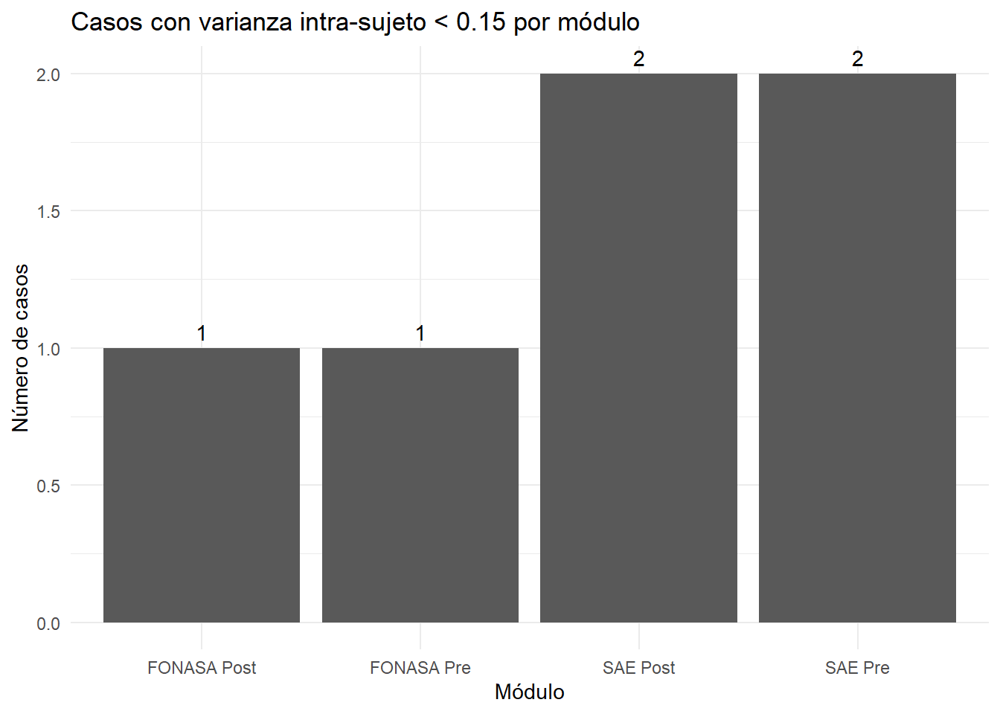
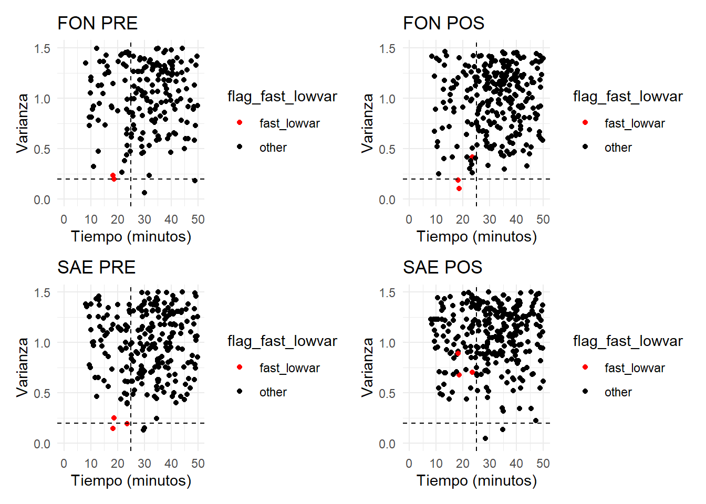
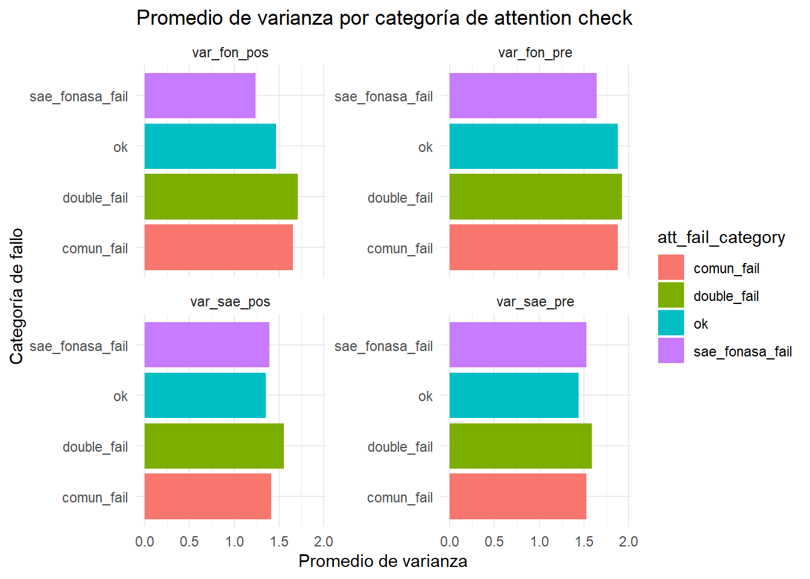

| Duración de la encuesta — Resumen | ||||||
|---|---|---|---|---|---|---|
| Promedio, mediana, rango y % de casos < 20 minutos | ||||||
| Grupo | N | Media | Mediana | Mínimo | Máximo | % <20 min |
| Overall | 599 | 43 min, 16 seg | 36 min, 46 seg | 8 min, 03 seg | 546 min, 40 seg | 12.4% |
| Género: Hombre | 290 | 48 min, 37 seg | 40 min, 48 seg | 8 min, 27 seg | 546 min, 40 seg | 8.6% |
| Género: Mujer | 309 | 38 min, 15 seg | 33 min, 58 seg | 8 min, 03 seg | 514 min, 50 seg | 15.9% |
| Zona: Región | 172 | 44 min, 36 seg | 34 min, 26 seg | 8 min, 23 seg | 546 min, 40 seg | 13.4% |
| Zona: RM | 427 | 42 min, 44 seg | 38 min, 00 seg | 8 min, 03 seg | 315 min, 52 seg | 11.9% |
| Educación: Media incompleta | 15 | 58 min, 29 seg | 35 min, 25 seg | 16 min, 31 seg | 315 min, 52 seg | 13.3% |
| Educación: Media completa | 172 | 40 min, 35 seg | 35 min, 17 seg | 8 min, 03 seg | 164 min, 17 seg | 9.9% |
| Educación: Educación superior | 410 | 43 min, 56 seg | 37 min, 40 seg | 8 min, 23 seg | 546 min, 40 seg | 13.2% |
| Educación: NA | 2 | 26 min, 51 seg | 26 min, 51 seg | 10 min, 55 seg | 42 min, 47 seg | 50.0% |
| Edad: 18–30 | 129 | 42 min, 32 seg | 35 min, 28 seg | 8 min, 23 seg | 315 min, 52 seg | 13.2% |
| Edad: 31–45 | 335 | 42 min, 33 seg | 35 min, 31 seg | 8 min, 56 seg | 514 min, 50 seg | 11.9% |
| Edad: 46–65 | 135 | 45 min, 48 seg | 39 min, 13 seg | 8 min, 03 seg | 546 min, 40 seg | 12.6% |
Reporte de campo Estudio Experimental SAE-Fonasa
Distribución del tiempo de respuesta
En promedio los participantes demoran 47 minutos, aunque hay un 7.8% de casos que demoran menos de 20 minutos. Se concentran en los participantes de media incompleta y género masculino (Ojo, es justo el perfil donde la muestra anda baja, por si estuvieran rellenando participantes artificiales).
Tramos y tiempos de respuesta
No existe asociación entre la cantidad de elementos que se suman al experimento y el tiempo de demora de las respuestas.
| get_variable_fc | mean_time |
|---|---|
| 1 | 2484.916 |
| 2 | 2416.926 |
| 3 | 2859.890 |
| 4 | 2445.904 |
| 5 | 2407.722 |
| 6 | 2499.944 |
| 7 | 2461.507 |
| 8 | 3234.319 |
| get_variable_saec | mean_time |
|---|---|
| 1 | 2366.378 |
| 2 | 2429.439 |
| 3 | 2402.658 |
| 4 | 2417.685 |
| 5 | 3073.222 |
| 6 | 3024.260 |
| 7 | 2746.944 |
| 8 | 2365.139 |
| variable | correlacion |
|---|---|
| suma_carga vs tiempo | 0.0422279 |
| suma_tramo vs tiempo | 0.0296836 |
Attention Check examination
Un 14% del total no pasa el primer checkeo de atención y un 23% del total no pasa el segundo. En el cuestionario SAE y FONASA los no atentos son pocos.
| Resultados de Attention Checks | ||
|---|---|---|
| Proporciones y frecuencias por prueba | ||
| Variable | No pasó la prueba | Pasó la prueba |
| Común – Atención check 1 | 0.120 (72) | 0.880 (527) |
| Común – Atención check 2 | 0.210 (128) | 0.790 (471) |
| SAE – Atención check 1 | 0.020 (10) | 0.980 (589) |
| SAE – Atención check 2 | 0.060 (36) | 0.940 (563) |
| FONASA – Atención check 1 | 0.030 (18) | 0.970 (581) |
| FONASA – Atención check 2 | 0.040 (22) | 0.960 (577) |
¿Cuánto fallan los que fallan? Un 25% falla al menos un attention check, y un 9% falla dos o más. 65% de la muestra nunca falla.
| Resultados de Attention Checks — Número de fallos | |||||||
|---|---|---|---|---|---|---|---|
| Proporciones y frecuencias de participantes que fallaron 0–6 checks | |||||||
| Grupo | Falló 0 checks | Falló 1 check | Falló 2 checks | Falló 3 checks | Falló 4 check | Falló 5 checks | Falló 6 checks |
| Overall | 0.666 (399) | 0.239 (143) | 0.062 (37) | 0.022 (13) | 0.008 (5) | 0.003 (2) | 0.000 (0) |
| Género: Hombre | 0.659 (191) | 0.252 (73) | 0.066 (19) | 0.014 (4) | 0.003 (1) | 0.007 (2) | 0.000 (0) |
| Género: Mujer | 0.673 (208) | 0.227 (70) | 0.058 (18) | 0.029 (9) | 0.013 (4) | 0.000 (0) | 0.000 (0) |
| Zona: Región | 0.744 (128) | 0.198 (34) | 0.047 (8) | 0.012 (2) | 0.000 (0) | 0.000 (0) | 0.000 (0) |
| Zona: RM | 0.635 (271) | 0.255 (109) | 0.068 (29) | 0.026 (11) | 0.012 (5) | 0.005 (2) | 0.000 (0) |
| Educación: Media incompleta | 0.600 (9) | 0.400 (6) | 0.000 (0) | 0.000 (0) | 0.000 (0) | 0.000 (0) | 0.000 (0) |
| Educación: Media completa | 0.634 (109) | 0.262 (45) | 0.076 (13) | 0.017 (3) | 0.006 (1) | 0.006 (1) | 0.000 (0) |
| Educación: Educación superior | 0.680 (279) | 0.224 (92) | 0.059 (24) | 0.024 (10) | 0.010 (4) | 0.002 (1) | 0.000 (0) |
| Educación: NA | 1.000 (2) | 0.000 (0) | 0.000 (0) | 0.000 (0) | 0.000 (0) | 0.000 (0) | 0.000 (0) |
| Edad: 18–30 | 0.628 (81) | 0.287 (37) | 0.054 (7) | 0.031 (4) | 0.000 (0) | 0.000 (0) | 0.000 (0) |
| Edad: 31–45 | 0.675 (226) | 0.230 (77) | 0.060 (20) | 0.021 (7) | 0.012 (4) | 0.003 (1) | 0.000 (0) |
| Edad: 46–65 | 0.681 (92) | 0.215 (29) | 0.074 (10) | 0.015 (2) | 0.007 (1) | 0.007 (1) | 0.000 (0) |
Varianza intra-sujeto por módulo
La literatura señala que < 0.15 de varianza en una batería es una respuesta sospechosa. Se presentan muy pocos casos con esa baja magnitud. No hay casos con 0 varianza (todas las respuestas iguales).
| Descriptivos de Varianza Intra-Sujeto por Módulo | |||||
|---|---|---|---|---|---|
| Módulo | Mínimo | Máximo | Media | Mediana | Desv.Std |
| var_fon_pos | 0.103 | 4.183 | 1.512 | 1.315 | 0.807 |
| var_fon_pre | 0.062 | 4.514 | 1.870 | 1.716 | 0.945 |
| var_sae_pos | 0.051 | 3.861 | 1.384 | 1.320 | 0.527 |
| var_sae_pre | 0.133 | 3.479 | 1.472 | 1.460 | 0.608 |

Alternancias mecánicas (Autocorrelación)
Hay buenos números de autocorrelación de las respuestas (lag-1). Ninguna supera los 0.90. Los números entre grupos no son muy contrastantes.
| Autocorrelación de Patrones de Respuesta (lag-1) | |||||||
|---|---|---|---|---|---|---|---|
| Descriptivos generales y por variables demográficas | |||||||
| Categoría | N | Mínimo | Máximo | Media | Mediana | SD | |
| Overall | Muestra total | 599 | 0.289 | 0.861 | 0.612 | 0.621 | 0.103 |
| genero | Hombre | 290 | 0.289 | 0.861 | 0.594 | 0.596 | 0.101 |
| Mujer | 309 | 0.294 | 0.861 | 0.630 | 0.641 | 0.101 | |
| comuna_rm | Región | 172 | 0.309 | 0.829 | 0.623 | 0.629 | 0.106 |
| RM | 427 | 0.289 | 0.861 | 0.608 | 0.617 | 0.101 | |
| education_recoded | Media incompleta | 15 | 0.363 | 0.734 | 0.591 | 0.623 | 0.107 |
| Media completa | 172 | 0.309 | 0.861 | 0.632 | 0.630 | 0.105 | |
| Educación superior | 410 | 0.289 | 0.831 | 0.605 | 0.612 | 0.101 | |
| NA | 2 | 0.630 | 0.635 | 0.633 | 0.633 | 0.003 | |
| edad_tramo | 18–30 | 129 | 0.294 | 0.811 | 0.612 | 0.617 | 0.099 |
| 31–45 | 335 | 0.309 | 0.861 | 0.607 | 0.622 | 0.103 | |
| 46–65 | 135 | 0.289 | 0.861 | 0.626 | 0.624 | 0.105 | |
Respuestas rápidas con poca varianza
No hay casos que estén dentro del percentil 10 de tiempo de demora y tengan auto-varianza menor a 0.15 en los módulos de sae y fonasa. El único caso que hay presenta varianza en los otros módulos.
# A tibble: 0 × 365
# ℹ 365 variables: participant_id <dbl>,
# datetime_of_participant_creation <chr>, datetime_of_entering_survey <chr>,
# datetime_of_finishing_survey <chr>, time_in_seconds <dbl>,
# ip_address <chr>, location_city <chr>, location_region <chr>,
# location_postcode <dbl>, location_country <chr>, location_latitude <dbl>,
# location_longitude <dbl>, device_type <chr>,
# is_touch_enabled_on_device <dbl>, browser_string <chr>, locale <chr>, …

Arbol de decisiones
Considerando el árbol de decisiones propuestos, este sería el resultado de las filtraciones de datos.
| categoria | frecuencia | proporcion |
|---|---|---|
| strike_double_atencion | 57 | 0.0951586 |
| strike_one_atencion_saefonasa | 33 | 0.0550918 |
| strike_time | 104 | 0.1736227 |
| strike_variance | 0 | 0.0000000 |
| eliminados | 85 | 0.1419032 |